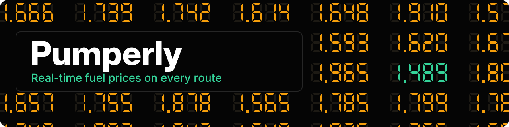
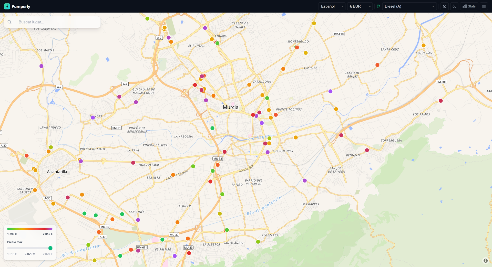
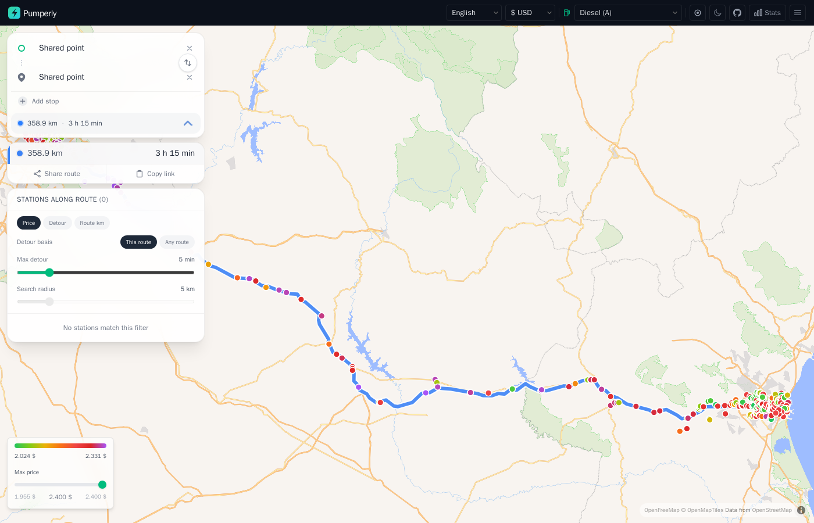

Pumperly¶



Pumperly is an open-source map of fuel prices and EV charging stations, with a route planner on top. You pick a start and a destination. Pumperly draws the route and lists the stations along it, with each station's price and the extra minutes a stop would cost you. You can use it at pumperly.com or run your own copy.
Prices come from official, community and commercial sources, with at least one scraper per country. A scraper is a small job inside the app that downloads a source's data on a schedule and stores it in a PostGIS database. PostGIS is PostgreSQL with map and distance functions. Routing uses Valhalla and address search uses Photon. Both are optional: without them, the map and its prices still work.
-
Start PostGIS and the app with Docker, create the database schema and open the map.
-
Find the cheapest station near you, switch fuel type and currency, and read a station's prices.
-
Which countries have prices, where they come from, and which sources are paused.
-
Every setting, its default and what it changes.
The map¶
Each dot is a station, coloured by its price for the fuel you picked. The scale runs from green for the cheapest through yellow and red to purple for the most expensive. See The map.

Plan a route and the side panel lists the stations along it. The detour slider hides stations that would cost more than the minutes you allow. See Planning a route.

What it does¶
- Shows fuel stations with their latest prices, for the fuel type you choose. The colour scale is set from the stations currently loaded, between their 5th and 95th percentile price, so green means cheap for the area you are looking at.
- Shows EV charging stations. Spain and Germany can use their official national registries. Every other country uses Open Charge Map. See EV charging sources.
- Plans a route from A to B, with stops and alternative routes, when Valhalla is configured. See Routing with Valhalla.
- Lists the stations along the route with the detour each one adds, so you can pick the cheapest stop within the minutes you allow.
- Searches addresses and places as you type, when Photon is configured. See Geocoding with Photon.
- Converts prices into the currency you choose, using the European Central Bank's daily reference rates. A few currencies the ECB does not publish use a fixed approximate rate. See Currencies and exchange rates.
- Speaks 17 languages. The address bar carries the language, for example
/enor/de. - Makes routes and stations shareable as a link. See Share links and deep links.
- Answers a small HTTP API for stations, routes and statistics.
How it runs¶
flowchart LR
subgraph sources [Price and charger sources]
GOV[Government open data]
COM[Community and commercial feeds]
OCM[Open Charge Map and national EV registries]
end
subgraph app [Pumperly app container, port 3000]
SCH[Scheduler<br/>one timer per scraper]
SCR[Scrapers]
API[Next.js pages and API]
end
DB[(PostGIS<br/>stations and prices)]
VAL[Valhalla<br/>routing, optional]
PHO[Photon<br/>address search, optional]
ECB[ECB daily exchange rates]
TILES[OpenFreeMap<br/>map tiles]
BR[Browser map]
SCH --> SCR
GOV --> SCR
COM --> SCR
OCM --> SCR
SCR --> DB
DB --> API
API -.-> VAL
API -.-> PHO
API -.-> ECB
API <--> BR
TILES --> BR- The app is one Next.js process. It serves the map, answers the API and runs every scraper on its own timer. See How scrapers work.
- The image is
drumsergio/pumperlyon Docker Hub, for linux/amd64 and linux/arm64. It listens on port 3000 and runs as user id 1001. - Scrapers write to PostGIS. The API reads from it: stations in the map view, stations along a route, and statistics.
- The app calls Valhalla for routes and Photon for address search. When
VALHALLA_URLorPHOTON_URLis not set, that feature is off and the rest keeps working. - The browser loads the map tiles straight from OpenFreeMap, which draws OpenStreetMap data.
- Because scrapers run inside the web process, run one copy of the app per database. Two copies would scrape every source twice.
Getting help¶
- New here? Start with Run with Docker Compose, then read What happens on first start.
- If something is broken, read Monitoring and troubleshooting, then open an issue on GitHub.
- To report a security problem, follow the security policy and do not open a public issue.
- The Glossary explains the terms these pages use.
- Separate projects connect Pumperly to Home Assistant, to AI assistants over MCP and to n8n. See Related projects.
- To add a country or send a fix, read Adding a country and Development.
All pages¶
- Features at a glance
- Get started: Run with Docker Compose · What happens on first start · Full stack with routing and geocoding · Run on Kubernetes with Helm
- Using Pumperly: The map · Planning a route · EV charging · Share links and deep links
- Data sources: Coverage and status · Sources at a glance · Fuel price sources · EV charging sources · How scrapers work · Adding a country
- Configuration: Countries and scrape schedule · Routing with Valhalla · Geocoding with Photon · API keys
- Operations: Upgrading · Backing up the database · Monitoring and troubleshooting
- Reference: Environment variables · HTTP API · Data model · Fuel types · Currencies and exchange rates · Glossary
- Related projects · Roadmap · Development
License¶
Pumperly is released under the AGPL-3.0-or-later license. Price and charger data keep the licence of their source. Fuel price sources and EV charging sources list them. Some sources allow only non-commercial use, and most require credit. If you run a public instance, read Data licences on a public instance first.